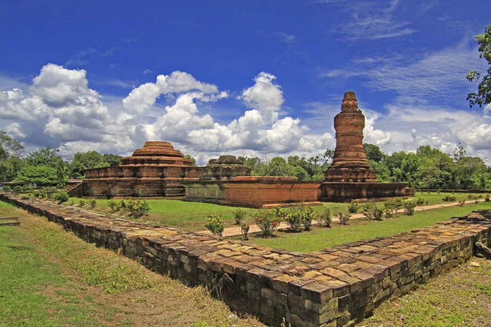
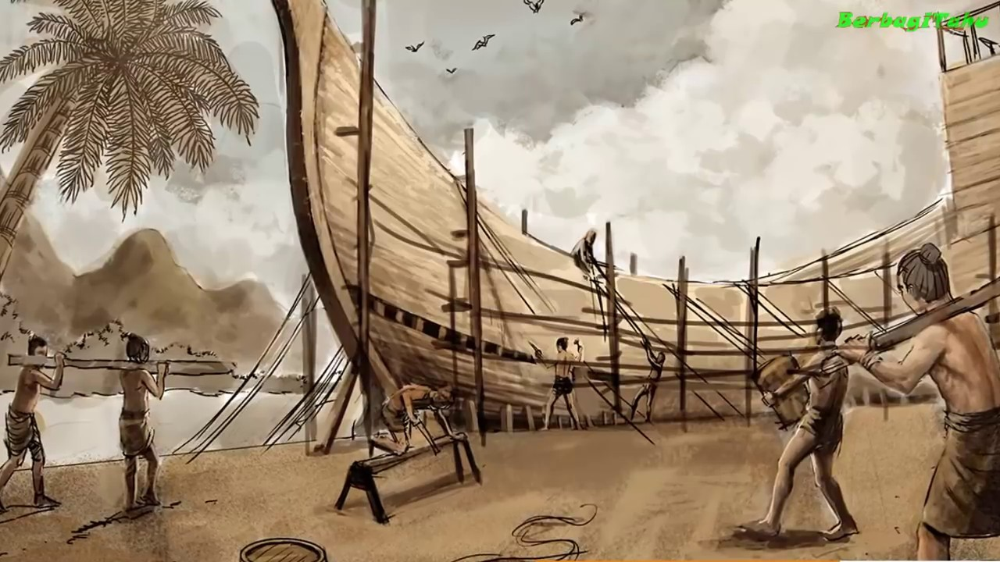
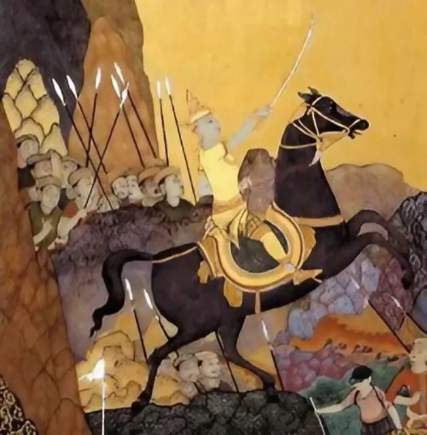

Dapunta Hyang Sri Jayanasa memimpin Siddhayatra (perjalanan suci) serta membawa 20.000 pasukan tentara dari minanga tamwan ke palembang. Sri Jayanasa Berhasil menaklukan Kerajaan melayu (berpusat di Jambi) Serta mengambil wilayah Bangka dan Lampung. Berdasarkan prasasti kota kapur, Sri Jayanasa menyerang kerajaan Tarumanegara yang terletak di Jawa Barat. Penaklukan wilayah-wilayah strategis dilakukan dengan tujuan untuk menguasai jalur perdagangan. Kerajaan Sriwijaya adalah kerajaan yang terdiri atas kedatuan yang dipimpin oleh seorang maharaja, sehingga Sriwijaya dulu dipanggil kedatuan Sriwijaya yang mana adalah sistem kerajaan melayu kuno. Untuk memperluas daerah pemerintahannya, Sriwijaya menaklukan berbagai wilayah di daerah pantai barat melayu pada tahun 682-685.

Sriwijaya berhasil untuk tetap berdiri Selama 1 Abad dan mencapai puncak kejayaannya pada abad ke 8-9 Terutama di bawah pemerintahan Raja Balaputradewa yang membangun armada laut Sehingga menarik kapal asing yang ingin berdagang. Sriwijaya menjadi pengendali rute perdagangan lokal dan mengenakan bea cukai bagi setiap kapal pedagang yang lewat karena Sriwijaya merupakan penguasa selat sunda dan selat Malaka. Kapal-kapal yang datang ke pelabuhan Sriwijaya membawa rempah, kain sutra dan barang-barang berharga lainnya sedangkan Sriwijaya menawarkan berbagai macam rempah-rempah. Sriwijaya menjalin Hubungan diplomatik dengan kerajaan-kerajaan luar negeri seperti Kerajaan Benggala dan Kerajaan Chola di India pada masa Raja Balaputradewa. Ia membangun biara di universitas Nalanda, India. Raja Rudra Wikrama yang memimpin jauh sebelum Balaputradewa juga mengirim 2 utusan ke Tiongkok guna melakukan hubungan diplomatik serta pembelajaran agama Buddha. Meskipun begitu, ada konflik yang terjadi di antara kerajaan Sriwijaya dan Mataram yang kemudian harinya akan akan menyebabkan kehancuran kedua kerajaan tersebut.


Raja Dharmawangsa dari Mataram menginvasi ibukota Sriwijaya pada akhir abad ke-9 dalam upaya untuk merebut palembang dalam selat Malaka. Hal tersebut menempatkan Sriwijaya di posisi yang tertekan. Raja Sri Cudamani pun berencana untuk melawan balik dengan cara bersekutu bersama Kaisar Tiongkok untuk membantu Sriwijaya. Sriwijaya juga bersekutu dengan Wurawari yang ada dendam dengan Kerajaan Mataram. Serangan berhasil dan akhirnya Sriwijaya bangkit kembali. namun tidak lama kemudian Kerajaan Chola dari India menyerang Sriwijaya karena dirasa Sriwijaya menghalangi kapal Chola serta Raja Chola ingin memperluas kekuasaannya. Sriwijaya pun hilang kekuasaannya meskipun masih bertahan hingga abad ke 13 dan kemudian runtuh karena serangan Majapahit. Meskipun begitu, pengaruh kerajaan Sriwijaya masih terlihat dari peninggalannya.